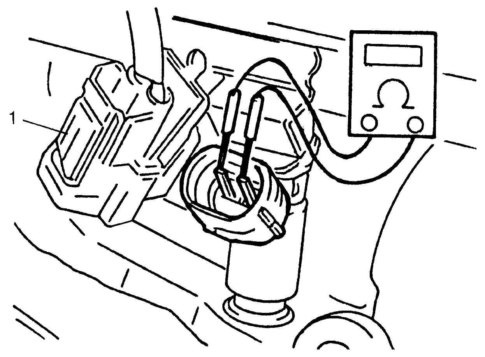

1G
| Fuel Injector Inspection |
If engine speed does not decrease with a particular fuel injector off in Power Balance Test:K14C check that injector as follows.
Fuel Injector Check
1)Remove intake manifold. 
2)Disconnect connector (1) from fuel injector, connect ohmmeter between terminals of fuel injector and check resistance.
If resistance is out of reference value greatly, replace injector.

If resistance is out of reference value greatly, replace injector.
Reference resistance of fuel injector
1.4 – 1.5 Ω at 20 °C (68 °F)

 "Expand image")
3)If resistance of the injector is normal, check power supply circuit.
4)Connect connector to fuel injector securely.
5)Install intake manifold.
“Long Term Fuel Trim” Check (Market Code P10, P37, P38, P71 and P96)
Check “Long Term Fuel Trim” referring to Fuel Injector Cleaning Procedure (Market Code P10, P37, P38, P71 and P96):K14C.
If value of “Long Term Fuel Trim” is not improved after driving vehicle to clean the injectors by cleaning agent mixed with fuel, replace all fuel injectors.